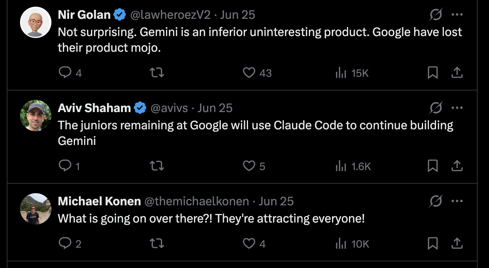
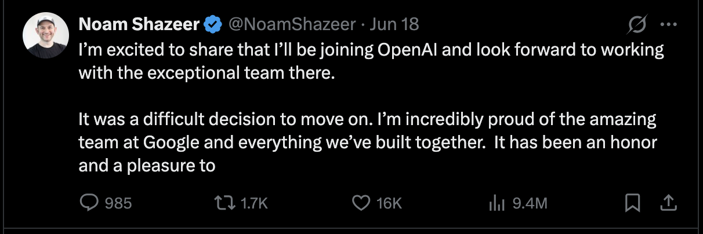
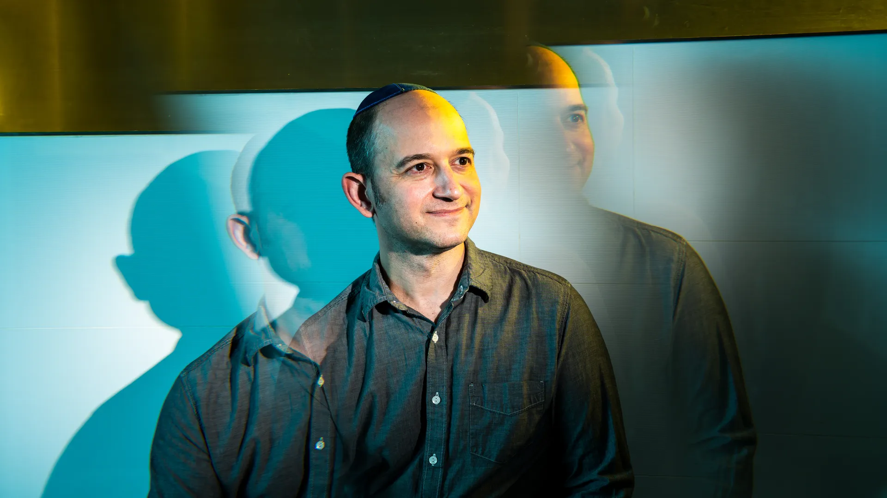
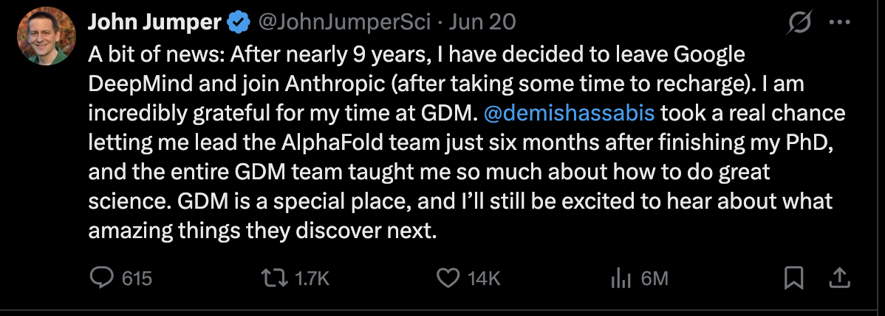
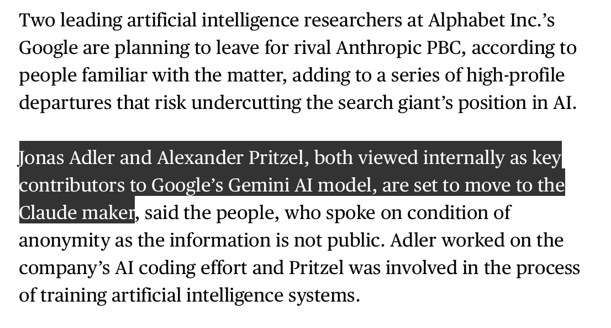
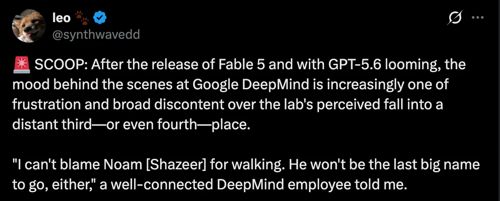
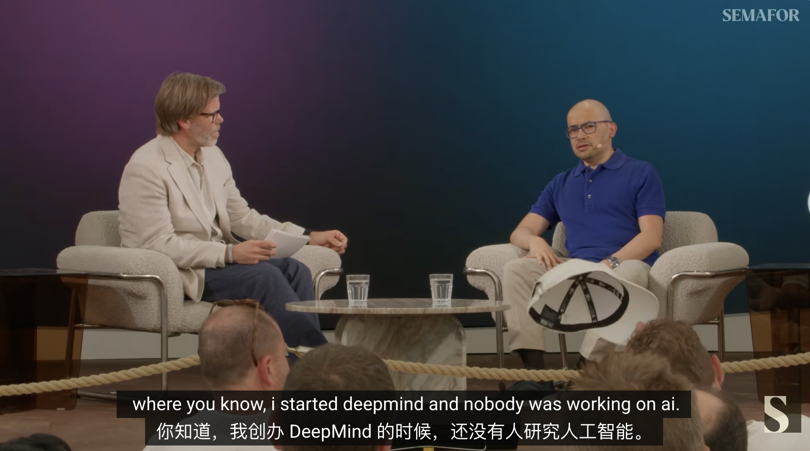
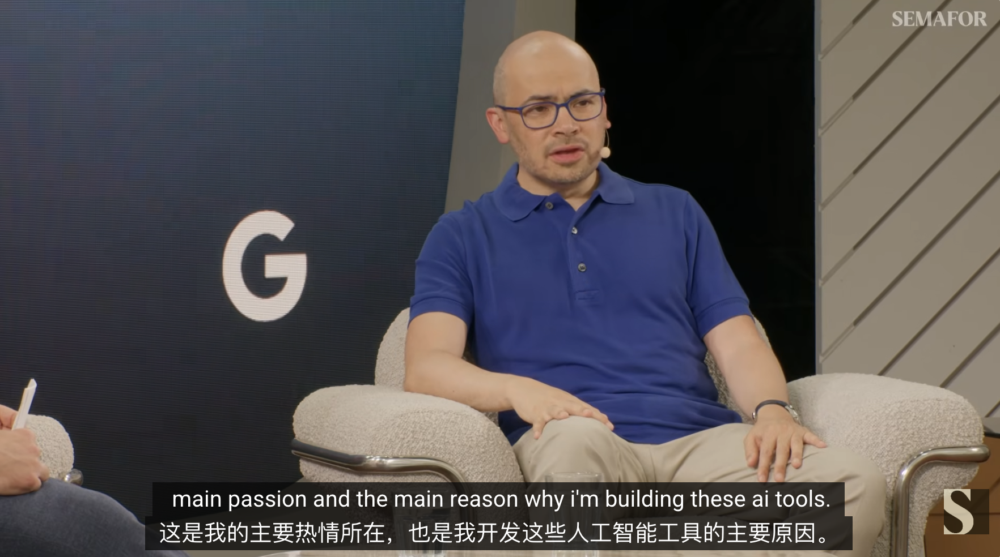

Google Endures a Sustained Talent Hemorrhage
Google Endures a Sustained Talent Hemorrhage
June's AI talent market placed Google squarely in the crosshairs. A cascade of senior technical departures from Google DeepMind has intensified over the past week.
As reported by Axios and Reuters, Gemini co-lead Noam Shazeer departed Google for OpenAI, while DeepMind senior research scientist and AlphaFold co-creator John Jumper announced on X his move to Anthropic.
Separately, Bloomberg reported that Google AI researchers Jonas Adler and Alexander Pritzel have also formally announced their exits, likewise bound for Anthropic.
This is no ordinary talent churn.
The four departing researchers each correspond to defining pillars of Google's AI ecosystem: Transformer architecture, large-model pre-training, Gemini, AlphaFold, AI coding, and model training infrastructure.
Unsurprisingly, this exodus ignited immediate discourse on X.
One X user directly attributed the high-profile exits to Google's AI struggles: 'Gemini is a平庸 and uninspired product. Google has lost its once-renowned product magic.'
Noam Shazeer decamped to OpenAI; John Jumper, Jonas Adler, and Alexander Pritzel decamped to Anthropic. Observers interpret this as evidence that Google is buckling under the AI talent war.

Noam Shazeer commands the most attention.
On June 18, Shazeer confirmed on X that he had joined OpenAI following his departure from Google. The timing is notable: less than two years have passed since Google re-acquired him and portions of his team via a Character.AI transaction valued at roughly $2.7 billion — a deal widely regarded as a strategic reinforcement of Google's large-model talent bench.

Shazeer's technical pedigree speaks for itself.
A co-author of the seminal 2017 paper 'Attention Is All You Need,' Shazeer helped pioneer the Transformer architecture — a technical bedrock of the LLM revolution. Upon returning to Google, he assumed a leadership role in Gemini development and was considered among the most consequential figures in the company's large-model apparatus.

His second exit thus carries profound symbolic weight. It demonstrates that in the AI talent arms race, even a company of Google's stature cannot permanently retain elite researchers via one costly 'buyback' — particularly as OpenAI continues to command the center stage of rapid expansion and capital-market narrative.
Another heavyweight departure: John Jumper.
Two days after Shazeer's announcement, Jumper posted on X that he had left DeepMind for Anthropic. A central architect of AlphaFold, Jumper shared the 2024 Nobel Prize in Chemistry with DeepMind CEO Demis Hassabis for protein structure prediction. AlphaFold's import extends beyond technical breakthrough: it proved that AI can penetrate the core workflows of scientific discovery, transcending chat, search, or content generation.

Jumper's exit therefore marks a loss of a different order: DeepMind is parting with not merely a large-model researcher, but a marquee name synonymous with the 'AI for Science' frontier.
If Shazeer's trajectory underscores OpenAI's gravitational pull in foundational model and architecture research, Jumper's move to Anthropic raises the question of whether Anthropic is systematically fortifying its capabilities in scientific AI, life sciences, and high-assurance modeling.
Anthropic has long been associated externally with Claude, AI safety, and model alignment. Yet as Claude Code, enterprise use-cases, and multi-step task execution broaden, the company requires not only product engineering muscle but also deeper fundamental research and scientific computing talent.
Separately, Bloomberg reported that researchers Jonas Adler and Alexander Pritzel have also exited Google.

Per Bloomberg reporting, Adler and Pritzel were both regarded internally as key AI researchers. Adler contributed to Google's AI Coding efforts; Pritzel specialized in AI system training. Both were described as substantial contributors to Gemini model development and intend to join Anthropic.
These two moves are equally consequential. AI Coding has emerged as one of the most fiercely contested application frontiers among OpenAI, Anthropic, Google, Microsoft, and others. Claude Code's ascent has amplified Anthropic's presence among developers. If the company continues onboarding researchers from Google's Gemini and AI Coding pipelines, its ambition clearly extends beyond preserving Claude's conversational prowess — it aims to sharpen its edge in coding, agentic systems, and complex task execution.
This context explains why the wave of exits resists simplistic narratives of 'Google is done.'
More precisely, it is the outcome of a wholesale repricing of talent value across the AI industry.
Business Insider attributes OpenAI and Anthropic's allure for top AI talent to two factors: sharper organizational focus and prospective pre-IPO equity. Unlike mature public companies such as Google, both remain in a regime of fast-moving valuations and elevated capital-market expectations — offering top researchers greater uncertainty, but also significantly more equity upside.
Simultaneously, compute is emerging as a latent variable in talent mobility. According to media reports, shortly before Shazeer's announcement, a portion of the compute allocation for his project was redirected to the Google DeepMind London team to facilitate collaboration and unified pre-training. The reporting stopped short of citing this as a direct cause of Shazeer's exit, yet within large-model organizations, compute is never merely infrastructure — it signals project priority, technical direction, and organizational leverage.
For Google, the question is not whether it still fields one of the world's preeminent AI research teams — the answer is self-evidently yes. DeepMind retains deep talent reserves, compute infrastructure, product surface area, and a storied research tradition.
Yet a critical factor cannot be overlooked: OpenAI and Anthropic are recalibrating the reference frame for talent competition.
Historically, Google served as a primary crucible of modern AI — from Transformer to AlphaFold, countless pivotal breakthroughs emerged from its ecosystem. Today, however, the calculus for top technical talent is shifting. Elite researchers evaluate not merely platform scale but also model trajectory, organizational efficiency, compute allocation, go-to-market velocity, and the potential to capture greater upside in the next cycle of AI company capitalization.
The June exodus is striking not for its raw headcount but for the emblematic weight of the names involved. It signals that the critical currency of the AI race extends beyond GPUs, data centers, and model parameters — it includes the select few who know how to convert those assets into breakthroughs.
Separately, Gemini itself has faced mounting skepticism over its capabilities, compounding the talent drain.
A post on X reads:
With Fable 5's release and GPT-5.6 on the horizon, the mood inside Google DeepMind is increasingly characterized by frustration and pervasive dissatisfaction. Many within believe the lab has slipped to a distant third — or even fourth.
'I can't fault Noam Shazeer for leaving. He won't be the last heavyweight to walk out the door,' one well-placed DeepMind employee told me.

As OpenAI and Anthropic continue to poach Google's core AI talent, DeepMind CEO Demis Hassabis finally confronted the defining question in a recent podcast: Does DeepMind still possess the talent required to prevail in the race toward AGI?
His response neither sidestepped the competitive pressure nor conceded the narrative that 'Google is forfeiting its AI talent edge.'
The host observed that when DeepMind joined Google, it appeared that 'the most important people in AI were all under one roof.' Today, at least three frontier labs — OpenAI, Anthropic, and others — are vying for the same top-tier researchers. Given this shift, does DeepMind still command the talent necessary to win the AGI race?

Hassabis's reply was unflinching: substantial talent fluidity exists among top labs, and DeepMind is unavoidably caught in that flow. He stressed, however, that Google continues to capture 'a meaningful share' of elite talent and that DeepMind commands the 'largest, broadest' research organization of any frontier lab.
Hassabis then situated the issue within a broader temporal arc.
In his telling, the intensity of today's AI talent wars was virtually inconceivable at DeepMind's founding. In 2010, when he launched the company, virtually no one in industry was earnestly pursuing AI; even in academia, the field was regarded as 'career suicide.' Neural networks, reinforcement learning, and learning systems were far from mainstream — DeepMind was a small band betting on a direction the establishment had dismissed.
A decade-plus later, the world has awoken to AI's potential. Hassabis observes that nearly every significant company now engages with AI, naturally producing one of the most ferocious talent competitions in technology history.
Thus, he does not discount the pull of competitors such as OpenAI and Anthropic, nor does he dispute that talent mobility has become standard among frontier model companies. His rejoinder: determining who prevails in the AGI contest cannot be reduced to the destinations of a handful of star researchers, nor to short-term buzz in text models or AI coding.
What Hassabis truly underscores is DeepMind's 'breadth.'
He noted that over the past decade-plus, many of the pivotal breakthroughs underpinning the modern AI industry originated from Google Brain and DeepMind. From the Transformer architecture that powers large language models, to the reinforcement learning that drove AlphaGo, to the scientific discovery exemplified by AlphaFold, Google's ecosystem has long functioned as the wellspring of fundamental AI advances. The merger of Google Brain and DeepMind into Google DeepMind has now consolidated previously dispersed research efforts under a single umbrella.
This underpins his repeated emphasis on the 'largest, broadest research team.'
In Hassabis's calculus, the road to AGI neither traverses text models alone nor is determined by code generation capabilities in isolation.
When asked whether AGI's path runs through existing text models — particularly those capable of self-improvement — Hassabis avoided a definitive answer, instead underscoring DeepMind's commitment to a multi-pronged strategy.
Those tracks encompass multimodal foundation models such as Gemini, alongside code generation, video synthesis, image generation, music creation, and models tailored for scientific research.
He contends that a genuinely complete AGI system requires models that comprehend the world around them — not merely processing text and logic, but grasping the physical, visual, and real-world environment. This imperative is especially acute for robotics, smart-glasses assistants, and scientific discovery.
This frames a subtle rebuttal to prevailing perceptions of OpenAI and Anthropic: if the frontier contest is defined as 'text LLMs + coding agents,' then Anthropic and OpenAI indeed command the louder voices. But if the destination is general intelligence, Hassabis argues, the race runs far wider than a single track.
He folds DeepMind's early game-AI experience into this framework. AlphaGo, Atari environments, and simulation platforms were never about games per se — they were designed to furnish AI systems with quantifiable, verifiable, moderately demanding intermediate objectives. Games were a ladder to real-world challenges. AlphaFold, drug discovery, weather modeling, and scientific simulation represent the true destination of this trajectory.

This constitutes Hassabis's formulation of 'why Google still prevails': not because Google is immune to talent losses, but because he believes AGI ultimately demands interdisciplinary, cross-modal, multi-scenario systems integration. The entity that fuses language, vision, code, scientific reasoning, world models, robotics, and simulation will draw closer to the terminal answer.
On AI risk, Hassabis maintained his customary caution. As the industry approaches AGI, he argued, cybersecurity is merely a 'warning flare.' In the years ahead, graver perils in domains such as biology and nuclear security may surface. He therefore advocates for more systematic evaluation frameworks — even international standards bodies — to assess frontier models, ensuring sufficient robustness and reliable safeguards.
This creates a subtle counterpoint to the accelerating capability trajectories at OpenAI and Anthropic. Anthropic — founded on safety and alignment — is rapidly fortifying its coding and enterprise presence; OpenAI continues its expansion around general-purpose models, product surfaces, and infrastructure. DeepMind, in Hassabis's narrative, is endeavoring to reclaim its position on the 'long-term AGI trajectory' — chasing not transient application trends but advancing multimodal AI, scientific discovery, and world models in parallel.
None of this, of course, dissipates the pressure bearing down on Google today.
With the AI talent war at its fiercest, the exit of elite researchers represents not merely an organizational setback but a blow to capital-market confidence and external perception. Names like Noam Shazeer and John Jumper carry immense signaling weight. The question the market asks is not whether Google still fields talent — it is why the figures who most embodied Google's AI golden age are being drawn away by OpenAI and Anthropic.
Hassabis's rejoinder effectively reframes the question from 'who departed' to 'who commands the more complete AGI roadmap.' He concedes the competition is ferocious but maintains that Google DeepMind retains the deepest, broadest talent reservoir, continues to produce frontier work, and remains committed to a multimodal, scientific-intelligence trajectory that extends well beyond text models.
Hassabis stops short of a facile 'Google will certainly prevail.' His meaning, however, is unmistakable: if AGI is not the victory of a solitary text model but a protracted contest of intelligent systems, world comprehension, and scientific discovery, then DeepMind still believes it occupies one of the most advantageous vantage points.
Reference links:
https://www.youtube.com/watch?app=desktop&v=hb9JPW_DkpQ
https://www.axios.com/2026/06/18/noam-shazeer-google-openai-characterai